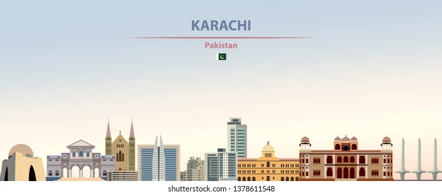
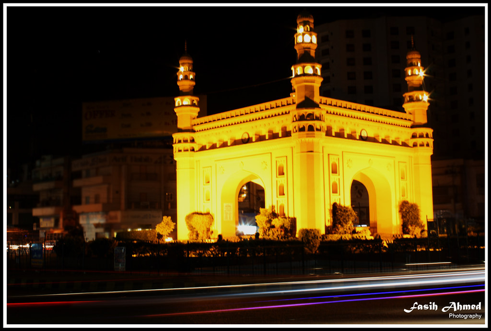

 Karachi, the bustling metropolis on the southern coast of Pakistan, stands as a vibrant tapestry of diverse cultures, history, and commerce. As Pakistan's largest city and economic hub, Karachi exudes a unique energy that reflects the dynamism of its people. From the historic quarter with landmarks like the Quaid's Mausoleum, symbolizing the nation's founding father, to the modern skyline adorned with towering structures, Karachi seamlessly blends tradition with progress. Its Arabian Sea coastline offers a refreshing contrast, where locals and visitors alike gather to enjoy the sea breeze and vibrant sunsets. The city's markets, such as Saddar and Clifton, are a sensory delight, bustling with activity and showcasing the multicultural fabric through a myriad of cuisines, languages, and traditions. Karachi's resilience and spirit make it a captivating destination, where the past and present converge in a harmonious urban symphony.
CITY ATTRACTION
| Attraction | Description | Pricing |
|---|---|---|
 |
Frere Hall, located in Karachi, Pakistan, is a historic building dating back to the British colonial era. Completed in 1865, it served as a public hall and library. Named after Sir Henry Bartle Edward Frere, it stands as an architectural gem, reflecting the city's historical significance and colonial heritage. | 100 RPS |
|  | Bahadurabad (بہادر آبا) is a historic small neighborhood of Gulshan Town, which is a part of the Karachi metropolitan area in Karachi East District, southern Pakistan. It was named after Bahadur Yar Jang, an Indian politician and Muslim leader. | 100 rps |